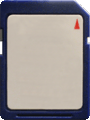
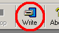
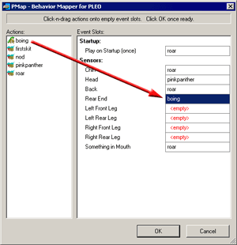

|
|
| MySkit Tutorial #3 -
Perform Skits on PLEO |
|
Contents of this website are freeware and/or copyrighted material, and may not be sold
under any circumstances.
Email: dogsbody@dogsbodynet.com
Home:
https://dogsbodynet.com
|
|
Perform Skits on PLEO!
The first tutorial
introduced
PLEO motion files (making PLEO move). The second described using the sound
editor.
Editing skits is ok for a while, but the real fun is
seeing PLEO perform them! This tutorial explains preparing
simple behaviors for PLEO flash cards.
It's easy & only takes a few mouse clicks.
A couple notes:
- This won't change PLEO's current personality at
all. The flash card behavior is temporary -- for fun only.
- To create a
more realistic & interactive personality for PLEO, you'll need
AiboPet's YAPT
utility (see tutorial #4).
Our goals are:
Let's get started!
| 1.0
Prepare an Action Directory |
| (1) |
An "action directory" is a
folder
(on your PC) where you collect the skits you want placed on PLEO.
There is nothing special about this folder, other than it contain the
workbooks (*.pleo) for your skits.
Generally you'll have one action directory for each PLEO personality
you create.
NOTE: If you have PLEO motion (*.umf) or sound files (*.usf)
you'll need to convert them into workbooks using MySkit.
See below.
|
 |
|
|
|
1.1 Making Workbooks from Motion/Sound files
MySkit can only write workbooks to flash cards.
To convert PLEO motions or sounds (*.umf/usf/wav), open them in
MySkit and use "File Menu -> Save
As..." to create workbooks from them.
|
|
|
|
| (1) |
MySkit
currently requires an SD Flash Card (16MB or larger recommended) and
flash card reader for writing it.
To configure MySkit -- so it knows where your card reader is --
select "Setup Flash Drive" from the File Menu.
Type in the drive path to your flash card
reader. |
 |
|
|
| (2) |
Insert a flash card
(at least 16
MBytes) into your SD card reader. Oops, don't have one? Any
of these should work fine.
NOTE: If your card originally came with a camera, reformat it on
your PC before continuing. Camera formatted cards use a
non-standard setup that can cause problems. |
 |
|
|
(1)
|
Start MySkit & close any open
skits.
Click on the toolbar "Write"
button.
|
 |
|
|
(2)
|
Now select the "action directory"
on your PC, where you've collected everything for your PLEO personality.
The picture (see right) shows selecting the Examples folder included
with MySkit.
|
 |
|
|
(3) |
If you've only one skit, you're done. MySkit skips to the next
section. Your
skit automatically plays when Pleo is turned on.
However, if you've multiple skits, then PMap starts. Now you
can select one skit for startup, a different one when the head is
touched, etc...
|
 |
|
|
(4)
|
Click-n-drag actions into the event slots. You can assign skits
to multiple events if you like (as shown), or leave some empty.
If you make a mistake, no worries. Click on the event slot
and drag to the correct place, or hit the DEL key to remove it.
You can't break anything here.
Once happy with your PMap assignments, click the "OK" button.
|
 |
|
|
4.0
Writing the Flash Card
|
(1)
|
MySkit compiles your action
directory,
and
writes it to the flash card.
The files are quite large, so this might take several seconds.
|
 |
|
|
(2)
|
Once MySkit displays "Done!" the
flash
card
is ready.
If an error occurred instead, click on the "View Log"
button to see what happened.
Otherwise, click "OK" to close the dialog.
|
 |
|
|
| (3) |
Turn off PLEO and
insert your flash card. Turn him back on
and enjoy!
To restore PLEO's original personality, turn him off and remove the
flash card. He'll be his original self unchanged when
powered back on.
After three tutorials, you can now create custom skits and watch them
perform on PLEO!
Congratulations!
Got a question? Ask Dogsbody!
|
 |
|
|
|
Legalese: These programs are provided AS IS without any warranty, expressed or implied.
This includes without limitation the fitfulness for a particular purpose or
application. People using the software bear all risk
as to its quality and performance. The user of the software
is responsible for any damages whether direct, indirect, special,
incidental or consequential arising from a failure of these programs to operate in
any manner desired. Etc, etc...
"PLEO" is a trademark UGOBE, Inc.
|
|